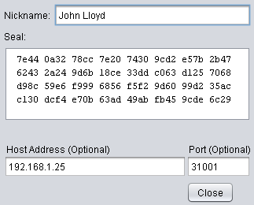
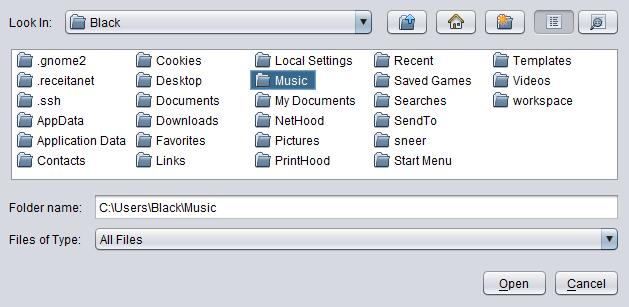
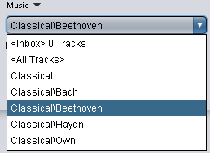

Getting Started
Using Sneer with others is more fun. Call a friend to try it out with you.
» Downloading
-
This will download Sneer source code, documentation and launch Sneer.
You can access the documentation from within the Sneer main menu.
Automatic installation:
or
Manual installation: Sneer (requires Java 6 Webstart).
You will be prompted for a secret passphrase. It should be more than 30 characters long and unique to you, for example: your childhood phone number followed by a verse from your favorite song.

Congratulations, you now have a sovereign seal! You can publish it so that other people can connect to you securely.
Enter your name in the "Own Info" screen that will appear and you're done.
» Adding a Friend
-
Adding a friend in Sneer is quite simple, just go to menu My Contacts and click on New Contact...

Now choose a nick name that easily identify your friend to you, paste his/her seal, host and port in their respective fields
When a green light beside your friend's nickname appears it means that you're connected!
» Sharing Music Tracks


-
Let's share music tracks with friends? Go to Menu and click on Music to open the Sneer player
A screen will show up asking you to choose a music tracks folder
OK! Now you have a drop-down list with all sub-folders and one Inbox option. It's your tracks inbox and the counter will increase as soon as you receive your friends tracks.
To listen to your musics just choose a folder and Music will start playing automatically

If you want to follow the progress of your downloads go to Menu and click on Downloads

» Uninstalling
-
To uninstall, simply delete the folder named sneer in your home folder.